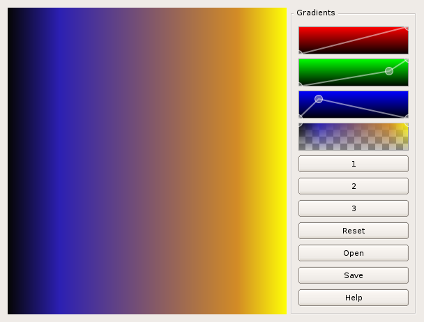

|
NanoQt documentation: home > plot3D > options > gradient editor |
This Qt Widget is a tool to define gradients with ARGB color definition, to be used with OpenGL:
There are four interactive interface elements:
The color table editor defines the colors in the gradient. The three topmost controls determine the red, green and blue components while the last defines the alpha of the gradient. You can move points, and add new ones, by clicking with the left mouse button, and remove points by clicking with the right button.
There are three other buttons that open or save some color tables, or reset.